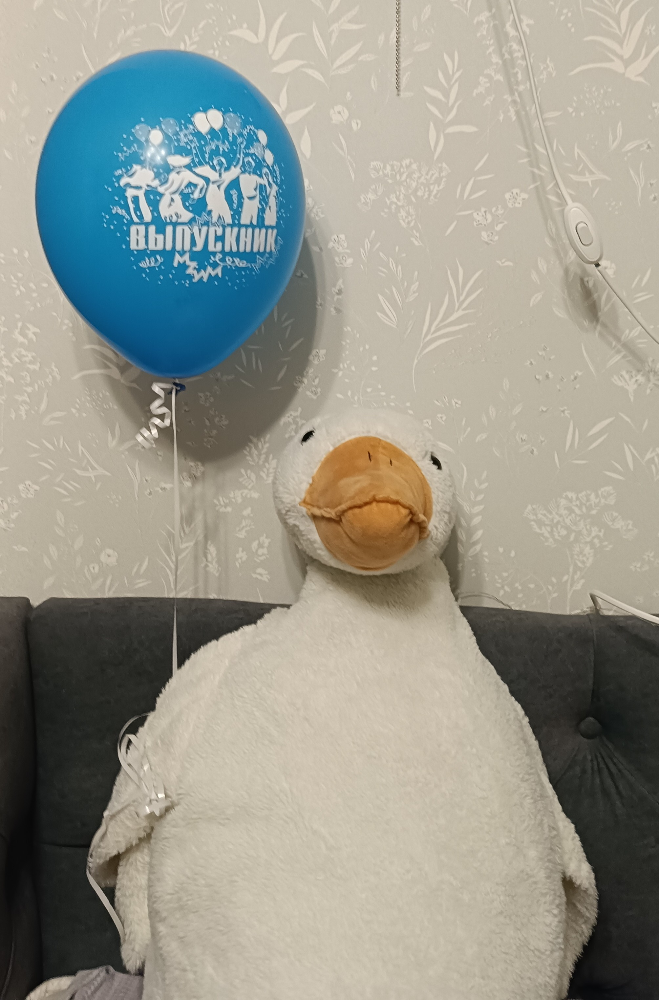

Кто такой Юрий Гусь? Откуда он прилетел? Каждый из нас точно задумывался об этом. Юрий Гусь - большой африканский гусь. По названию вида можно сразу определить откуда он - из Африки.
Но как же он попал в центральную Россию? Все просто: во-первых гуси не любят летать, во-вторых у них плохо работает внутренний компас. Так он и залетел к нам на огонек с 30 на 31 2024 года.
Характеристики:
Имя: Юрий
Фамилия: неизвестно
Отчество: неизвестно
Возраст: неизвестно
Цвет: лунно-белый
Рост: 160см
Вес: неизвестно
Увлечения: любит хорошо покрякать
Примечание: к его имени лучше прибавлять "Гусь"